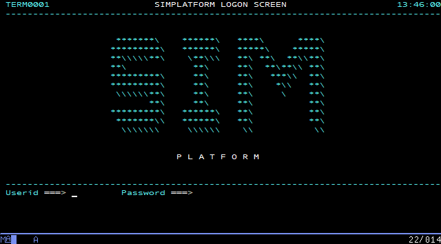
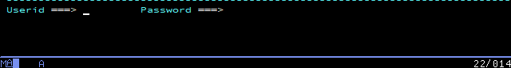
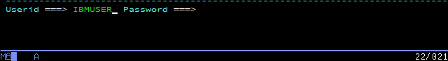
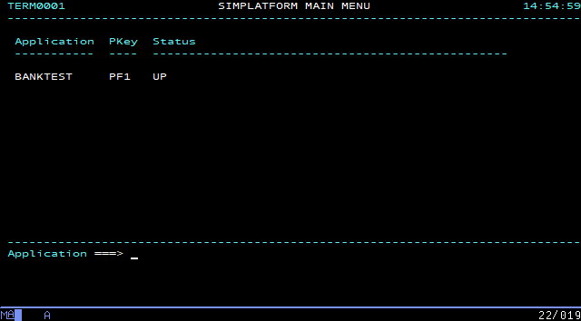
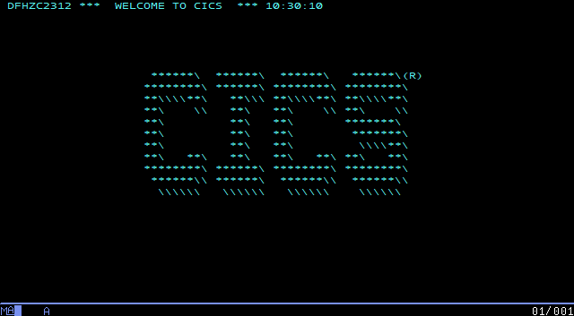
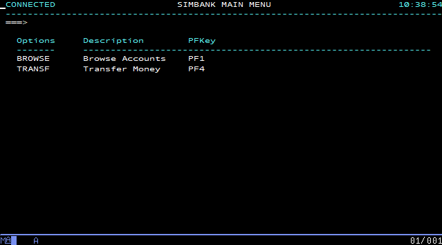
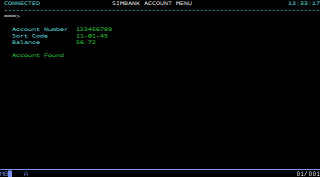
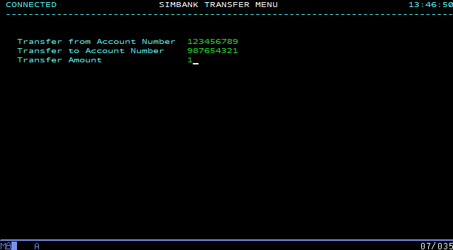

Exploring Galasa SimBank offline
SimBank applications and a set of sample SimBank tests are located in the maven directory of the isolated.zip downloadable file.
To start exploring the Galasa Simbank application and to run the sample SimBank tests by using the Galasa CLI, you need to complete the following steps:
- Start the Simplatform server by running the
run-simplatform.shscript provided in theisolated.zip.- Navigate to the directory of the zipped distribution that you downloaded, for example,
~/Downloads/isolated. Arun-simplatform.shscript is available within the directory. This script starts the Simplatform server which is required to run the SimBank tests. - Set execute permission on the script by running the
chmod +x run-simplatform.shcommand in the directory containing therun-simplatform.shscript. - Run the script in server mode by using the following example command, remembering to set the
--locationflag to the location of the galasa-simplatform artefact in theisolated.zipfile that you downloaded. For example,~/Downloads/isolated/maven/dev/galasa. In a few seconds, the terminal window displays a series of initialization messages, which on Windows looks like:If you are a Mac or Linux user, the messages will be almost identical. The SimBank process has been launched, and is listening on port 2023 for Telnet connections, on port 2080 for web services connections and on port 2027 for Derby SQL connections. Neither web services or Derby connections are explored further in this section.2019-10-21 14:24:35 INFO dev.galasa.simplatform.main.Simplatform main Starting Simplatform ... 2019-10-21 14:24:35 INFO dev.galasa.simplatform.db.Database setDerbyHome Setting Derby home to C:\Users\<username>\AppData\Local\Temp\galasaSimplatform1440125512154994774 2019-10-21 14:24:36 INFO dev.galasa.simplatform.saf.SecurityAuthorizationFacility <init> Creating SAF service 2019-10-21 14:24:36 INFO dev.galasa.simplatform.application.Bank accountExists Checking if account: 123456789 exists 2019-10-21 14:24:36 INFO dev.galasa.simplatform.application.Bank accountExists Account doesn't exist 2019-10-21 14:24:36 INFO dev.galasa.simplatform.application.Bank openAccount Creating account: 123456789 2019-10-21 14:24:36 INFO dev.galasa.simplatform.application.Bank accountExists Checking if account: 987654321 exists 2019-10-21 14:24:36 INFO dev.galasa.simplatform.application.Bank accountExists Account doesn't exist 2019-10-21 14:24:36 INFO dev.galasa.simplatform.application.Bank openAccount Creating account: 987654321 2019-10-21 14:24:36 INFO dev.galasa.simplatform.saf.SecurityAuthorizationFacility addUser Added user: IBMUSER 2019-10-21 14:24:36 INFO dev.galasa.simplatform.main.Simplatform main Loading services... 2019-10-21 14:24:36 INFO dev.galasa.simplatform.listener.Listener <init> Loading service: dev.galasa.simplatform.listener.WebServiceListener listening on port: 2080 2019-10-21 14:24:36 INFO dev.galasa.simplatform.listener.Listener <init> Loading service: dev.galasa.simplatform.listener.TelnetServiceListener listening on port: 2023 2019-10-21 14:24:36 INFO dev.galasa.simplatform.main.Simplatform main ... services loaded 2019-10-21 14:24:36 INFO dev.galasa.simplatform.main.Simplatform main Starting Derby Network server.... 2019-10-21 14:24:37 INFO dev.galasa.simplatform.main.Simplatform main ... Derby Network server started on port 2027 2019-10-21 14:24:37 INFO dev.galasa.simplatform.main.Simplatform main ... Simplatform started
- Navigate to the directory of the zipped distribution that you downloaded, for example,
Manually exploring the SimBank application¶
When you launch SimBank, its banking application listens on port 2023 for incoming client Telnet connections, offering an opportunity to first connect to it manually to review and understand the (simulated) transactions it supports, before subjecting it to Galasa's provided tests.
Logging in to the simulated application¶
- With the Galasa SimBank component still running, configure your 3270 terminal emulator to access port 2023 of localhost (or IP address 127.0.0.1 if the localhost alias has not been set up) via the Telnet protocol. No SSL configuration is required.
-
Connect to the listening Telnet service with your 3270 emulator and review the logon screen:

-
Ensure that the cursor is in the
Useridfield - if it is not, use the TAB key to position it:
-
Enter the userid
IBMUSER
-
Press TAB to move the cursor into the
Passwordfield, type the passwordSYS1and press your 3270 terminal emulator's ENTER key to logon and transfer to the SimBank main menu:
Note: Depending on your 3270 terminal emulator, its ENTER key may not be mapped to the physical ENTER key on your computer. For example, on PCOMM, by default, the ENTER key is mapped to the host machine's right CTRL key. If you are unsure about this, review your terminal emulator's documentation.
-
Press PF1:

-
Press your 3270 terminal emulator's CLEAR SCREEN key.
-
Enter the transaction name
BANKand press your 3270 terminal emulator's ENTER key once more to get to the SimBank main menu:
As you have been progressing through this process, selected events are logged to your terminal:
2019-08-16 09:26:39 INFO dev.galasa.simplatform.t3270.screens.AbstractScreen buildScreen Building Screen: SessionManagerLogon
2019-08-16 10:26:08 INFO dev.galasa.simplatform.saf.SecurityAuthorizationFacility authenticate User: IBMUSER authenticated
2019-08-16 10:26:08 INFO dev.galasa.simplatform.t3270.screens.AbstractScreen buildScreen Building Screen: SessionManagerMenu
2019-08-16 10:30:10 INFO dev.galasa.simplatform.t3270.screens.AbstractScreen buildScreen Building Screen: CICSGoodMorning
2019-08-16 10:36:19 INFO dev.galasa.simplatform.t3270.screens.AbstractScreen buildScreen Building Screen: CICSClearScreen
2019-08-16 10:38:54 INFO dev.galasa.simplatform.t3270.screens.AbstractScreen buildScreen Building Screen: BankMainMenu
Browsing account information¶
- From the SimBank main menu, press PF1, taking you to the account menu screen.
-
Press TAB until the cursor is in the
Account Numberfield, enter123456789and press ENTER. The account details are populated and it is apparent that account number 123456789 is 56.72 in credit.
-
Press PF3 to return to the account menu screen.
Transferring funds between accounts¶
- From the SimBank main menu, press PF4, taking you to the SimBank transfer menu.
- Press TAB until the cursor is in the
Transfer from Account Numberfield and enter123456789. - Press TAB until the cursor is in the
Transfer to Account Numberfield and enter987654321. -
Press TAB until the cursor is in the
Transfer Amountfield and enter1
-
Press ENTER - a
Transfer Successfulmessage appears. A log message is also written to the terminal:
2019-08-16 13:50:53 INFO dev.galasa.simplatform.application.Bank transferMoney Transfering 1.0 from account: 123456789 to account: 987654321
Press PF3 and once again browse the 123456789 account as described previously to verify that its total credit has decreased by the transferred 1.00, and that the 987654321 account has increased by the same amount.
Note that SimBank also offers a web services interface on port 2080, and although it is not exercised in this topic, it is used by two of the provided tests - BasicAccountCreditTest.java and ProvisionedAccountCreditTests.java.
Having explored SimBank manually, it's a good time to run some or all of a small collection of automated tests that are provided with SimBank itself - to start, choose Running the supplied SimBank tests offline.